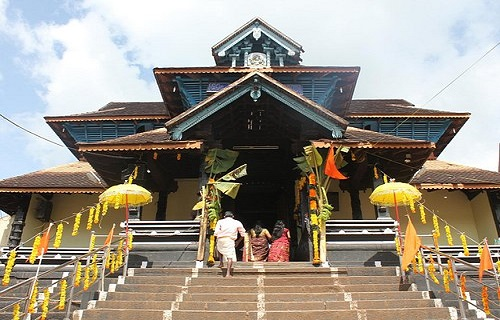

TOP ATTRACTIONS IN PATHANAMTHITTA
PERUNTHENARUVI WATERFALL

Situated in the forest region of Sabarimala in Pathanamthitta district, one of the major pilgrim centres of South India, Perunthenaruvi allures tourists with its breathtakingly beautiful waterfalls and the dazzling stream that flows to merge with the sacred Pamba River. The locality is the home turf of beehives which have bestowed the place with the title Perunthenaruvi meaning the “River of Honey”. There is no better place to have a pleasant peaceful time than when you are romancing with nature and surround yourself with its purity to cleanse your soul. Perunthenaruvi offers you just that.
KONNI FOREST RESERVE

Konni is a major town and a Taluk headquarters in Pathanamthitta district, Kerala, India. Konni is known for its elephant cages, forests, and rubber plantations. Konni is also known as "Anakoodinte Nadu".Konni has a major elephant training centre, located 11 km from Pathanamthitta. The prime attraction here are the huge cages of wood built to house elephants. These cages are locally known as Aanakoodu and can accommodate 3 to 4 elephants at a time. The trainers here train the baby elephants which get separated from their herd, or are found wounded or roaming in the forest.
ARANMULA TEMPLE
The Aranmula Parthasarathy Temple is one of the "Divya Desams", the 108 temples of Vishnu revered by the 12 poet saints, or Alwars located near Aranmula, a village in Pathanamthitta District, Kerala, South India. Constructed in the Kerala style of architecture, the temple is glorified in the Divya Prabandha, the early medieval Tamil canon of the Azhwar saints from the 6th–9th centuries AD. It is one of the 108 Divyadesam dedicated to Krishna, an avatar of Vishnu, who is worshipped as Parthasarathy (Partha's charioteer). The nearest railway station to the temple is located in Chengannur, while the nearest airport is Trivandrum International Airport.